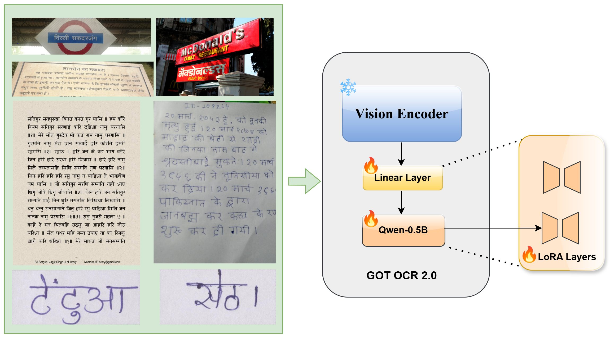
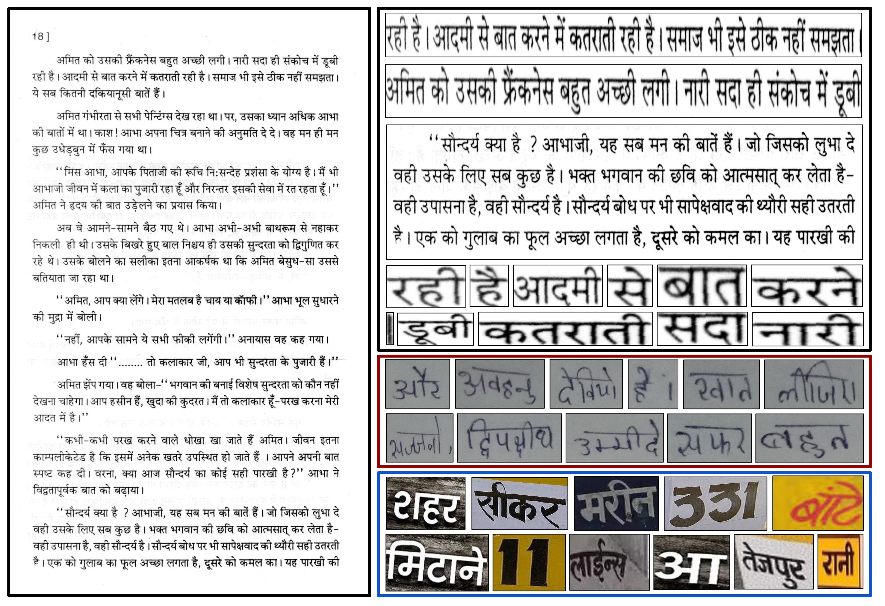
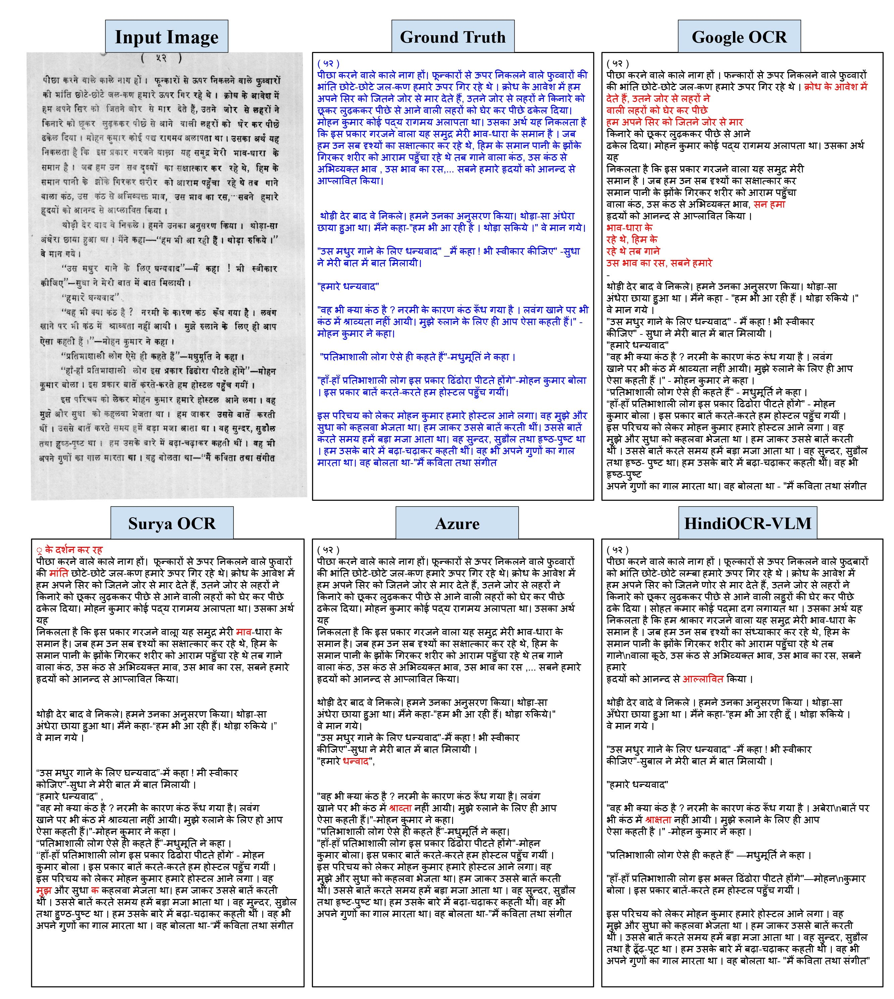
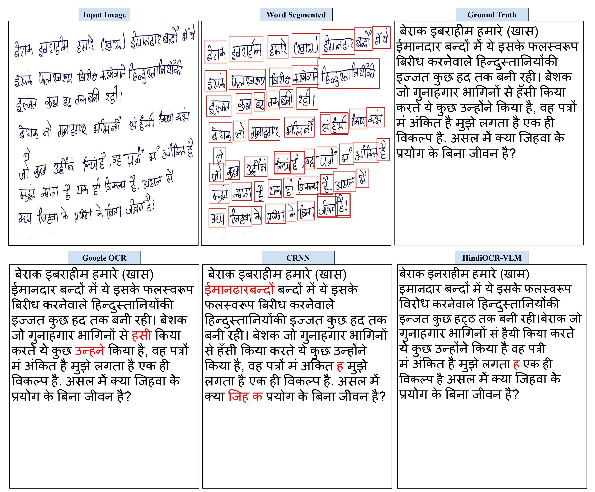
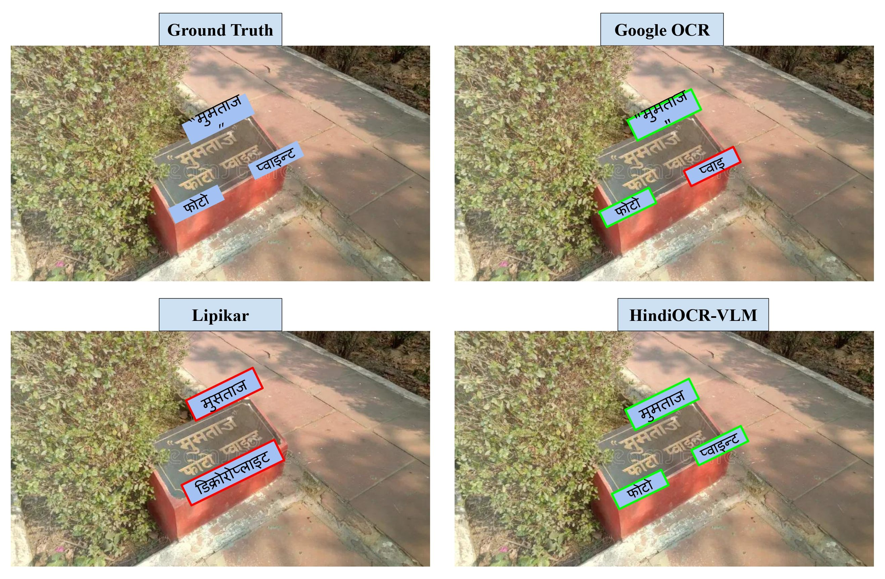

📝
HindiOCR-VLM
Adapting Vision-Language Models for Hindi OCR
CVIT, IIIT Hyderabad
* Equal Contribution.
To be presented at ICDAR 2025 (Sept 16 - 21; Wuhan, China.)
Key Contributions
- First VLM-based Hindi OCR: To the best of our knowledge, this is the first study to leverage modern Vision-Language Models (VLMs) for unified, single-stage OCR in Hindi, as illustrated in Fig. 1.
- Progressive Learning: We demonstrate that progressive learning during fine-tuning significantly improves the language learning abilities of HindiOCR-VLM and accelerates convergence.
- State-of-the-art Performance: Extensive experiments show that HindiOCR-VLM outperforms in printed and handwritten text, while being comparable in scene text to industry-grade and open-source OCR models.
Abstract
Optical Character Recognition (OCR) for Indian languages presents unique challenges due to the diversity and complexity of scripts, which include intricate characters, diacritics, and various writing styles. This study introduces HindiOCR-VLM, an initiative to adapt Vision-Language Models (VLMs) specifically for OCR in Hindi. We build on a pre-trained model initially developed for documents in Chinese and English and utilize Low-Rank Adaptation (LoRA) to fine-tune it effectively for multi-domain applications. Inspired by human learning processes, we propose a progressive learning approach --- a training strategy to enhance language acquisition and accelerate convergence. Furthermore, we leverage the rich representations of the vision encoder to support multi-domain training across printed, handwritten, and scene text. Our experiments demonstrate how VLMs tackle the complexities of Indian scripts, such as Devanagari, leading to improved character and word recognition accuracy. Comparative evaluations against existing benchmarks reveal that {HindiOCR-VLM} outperforms domain-specific models, establishing a unified, generalized multi-domain model that showcases superior performance across all domains. This work marks a significant advancement in OCR technology for the Hindi language.
Proposed Pipeline

The proposed pipeline leverages a modern Vision-Language Model, fine-tuned progressively for Hindi OCR tasks. The architecture integrates image and text modalities, enabling robust recognition across diverse document types.
Training Dataset

The in house training dataset for HindiOCR-VLM comprises of a diverse collection of printed, handwritten, and scene text images in Hindi. It includes variability in fonts, writing styles, and real-world conditions necessary for robust OCR model training. For mixed-modality training, we used 400k word-level images per modality (1.2M total), with both setups evaluated on a challenging test set. We have released the test dataset for the community to evaluate the performance of the models.
| Level |
Train |
Val |
| Words |
11,924,480 |
19,654 |
| Line |
1,016,000 |
1,016 |
| Block |
352,737 |
7,054 |
| Page |
36,340 |
181 |
| Modality |
Pages |
Words |
| Printed |
150 |
47,587 |
| Handwritten |
100 |
4,347 |
| Scene Text |
50 |
378 |
Table 1: Dataset statistics — left: Training for Printed Text and right: Challenging Test Set
Results

Printed Text

Handwritten Text

Scene Text
Single Stage OCR Results
Performance comparison with commercial and non-commercial OCRs on Printed Text. † and ‡ indicate two step and single step approaches, respectively.
| Method |
WRR |
CRR |
| Google OCR |
87.35 |
96.16 |
| Azure OCR |
87.17 |
96.94 |
| CRNN |
87.32 |
96.22 |
| Surya OCR |
83.69 |
80.66 |
| HindiOCR-VLM† |
90.77 |
95.05 |
| HindiOCR-VLM‡ |
84.74 |
92.63 |
Two Stage OCR Results
Shows the performance comparison of OCR methods on different text modalities. A '-' in the table indicates that the model is not applicable for that modality.
| Method |
Printed Text |
Handwritten Text |
Scene Text |
| WRR |
CRR |
WRR |
CRR |
WRR |
CRR |
| Google OCR |
87.35 |
96.16 |
73.27 |
80.88 |
74.38 |
87.56 |
| Lipikar |
- |
- |
- |
- |
65.81 |
74.16 |
| Azure OCR |
87.17 |
96.94 |
- |
- |
- |
- |
| Domain Specific OCR |
87.32 |
96.22 |
73.69 |
69.63 |
71.21 |
85.54 |
| Surya OCR |
83.69 |
80.66 |
- |
- |
- |
- |
| HindiOCR-VLM |
91.28 |
97.12 |
75.21 |
89.78 |
67.15 |
84.85 |
Bibtex